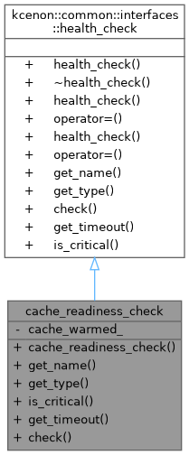

Public Member Functions | |
| cache_readiness_check (bool warmed) | |
| std::string | get_name () const override |
| Get the unique name of this health check. | |
| health_check_type | get_type () const override |
| Get the type of this health check. | |
| bool | is_critical () const override |
| Check if this health check is critical. | |
| std::chrono::milliseconds | get_timeout () const override |
| Get timeout duration for this health check. | |
| health_check_result | check () override |
| Perform the health check. | |
 Public Member Functions inherited from kcenon::common::interfaces::health_check Public Member Functions inherited from kcenon::common::interfaces::health_check | |
| health_check ()=default | |
| virtual | ~health_check ()=default |
| health_check (const health_check &)=delete | |
| health_check & | operator= (const health_check &)=delete |
| health_check (health_check &&)=delete | |
| health_check & | operator= (health_check &&)=delete |
Private Attributes | |
| bool | cache_warmed_ |
Detailed Description
- Examples
- health_check_example.cpp.
Definition at line 45 of file health_check_example.cpp.
Constructor & Destructor Documentation
◆ cache_readiness_check()
|
inlineexplicit |
- Examples
- health_check_example.cpp.
Definition at line 48 of file health_check_example.cpp.
Member Function Documentation
◆ check()
|
inlineoverridevirtual |
Perform the health check.
- Returns
- Health check result containing status and details
Implements kcenon::common::interfaces::health_check.
- Examples
- health_check_example.cpp.
Definition at line 59 of file health_check_example.cpp.
References cache_warmed_, kcenon::common::interfaces::health_check_result::message, and kcenon::common::interfaces::health_check_result::status.
◆ get_name()
|
inlineoverridevirtual |
Get the unique name of this health check.
- Returns
- Health check name
Implements kcenon::common::interfaces::health_check.
- Examples
- health_check_example.cpp.
Definition at line 50 of file health_check_example.cpp.
◆ get_timeout()
|
inlineoverridevirtual |
Get timeout duration for this health check.
- Returns
- Timeout duration (default: 5 seconds)
Implements kcenon::common::interfaces::health_check.
- Examples
- health_check_example.cpp.
Definition at line 54 of file health_check_example.cpp.
◆ get_type()
|
inlineoverridevirtual |
Get the type of this health check.
- Returns
- Health check type
Implements kcenon::common::interfaces::health_check.
- Examples
- health_check_example.cpp.
Definition at line 51 of file health_check_example.cpp.
◆ is_critical()
|
inlineoverridevirtual |
Check if this health check is critical.
Critical health checks affect the overall system health status. Non-critical checks are reported but don't impact system health.
- Returns
- true if this is a critical health check
Implements kcenon::common::interfaces::health_check.
- Examples
- health_check_example.cpp.
Definition at line 52 of file health_check_example.cpp.
Member Data Documentation
◆ cache_warmed_
|
private |
- Examples
- health_check_example.cpp.
Definition at line 76 of file health_check_example.cpp.
Referenced by check().
The documentation for this class was generated from the following file:
- examples/health_check_example.cpp